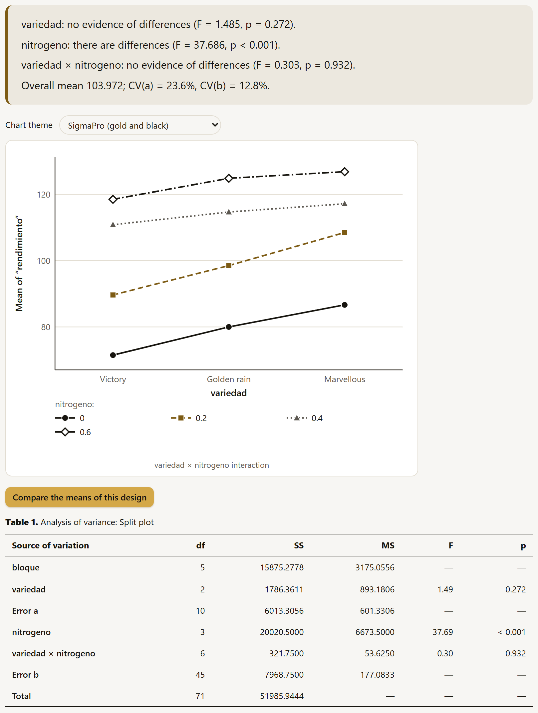
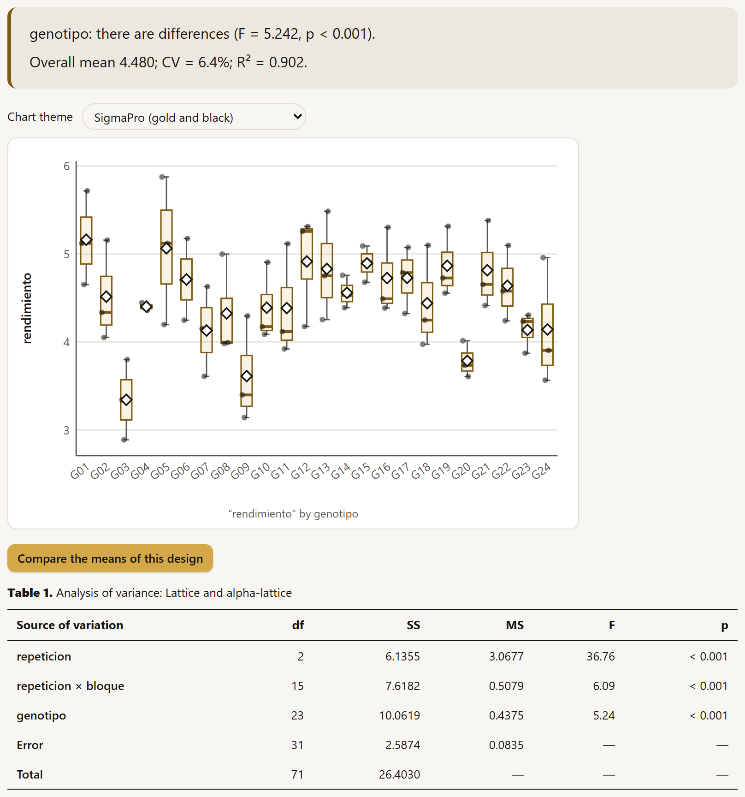
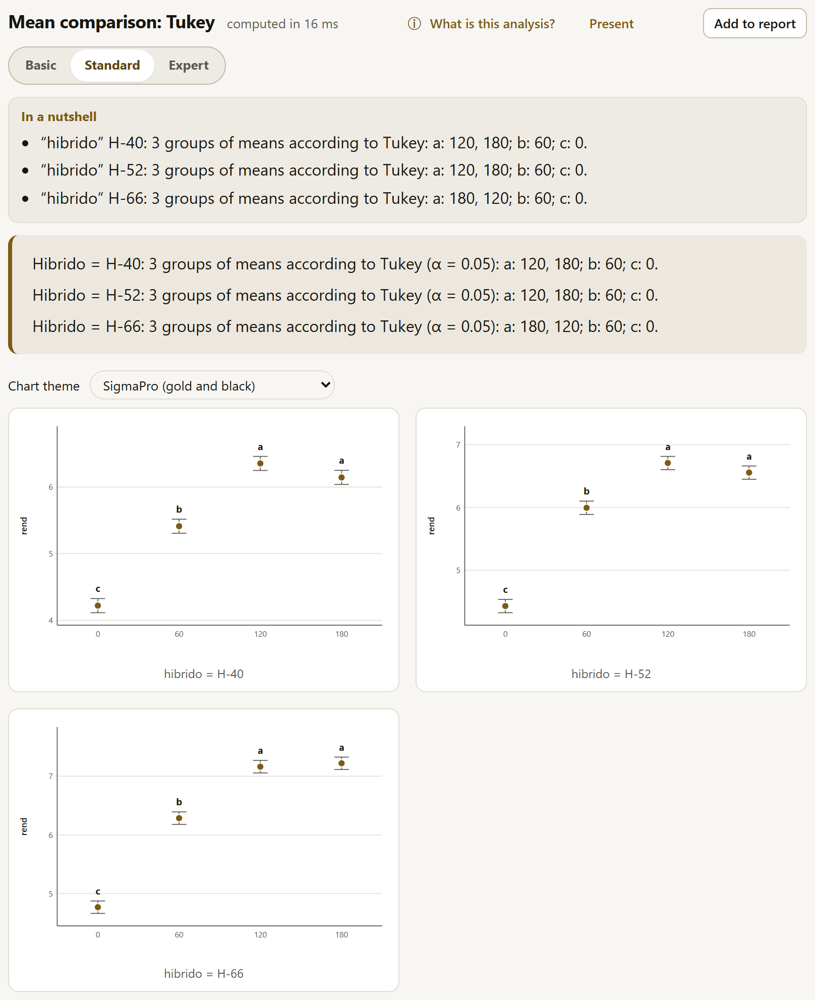
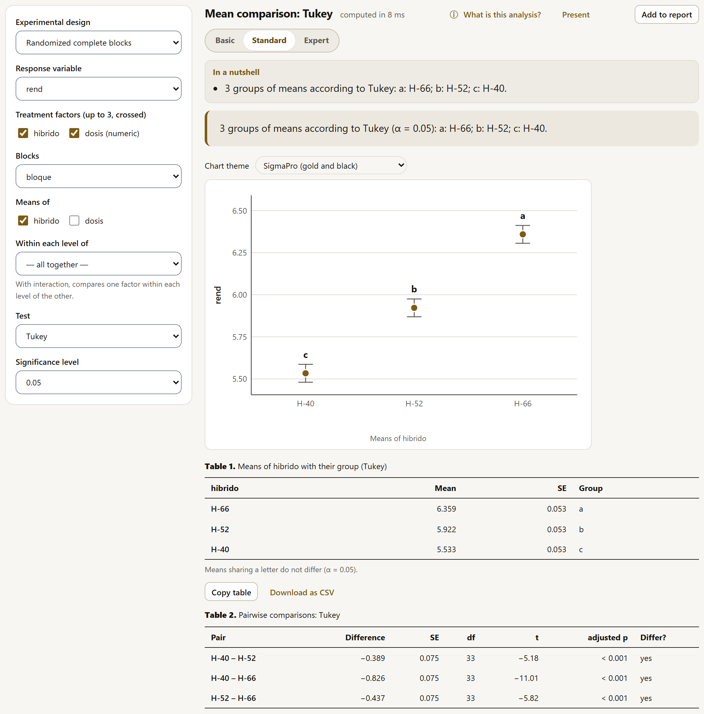
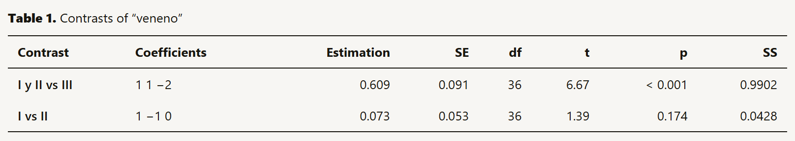
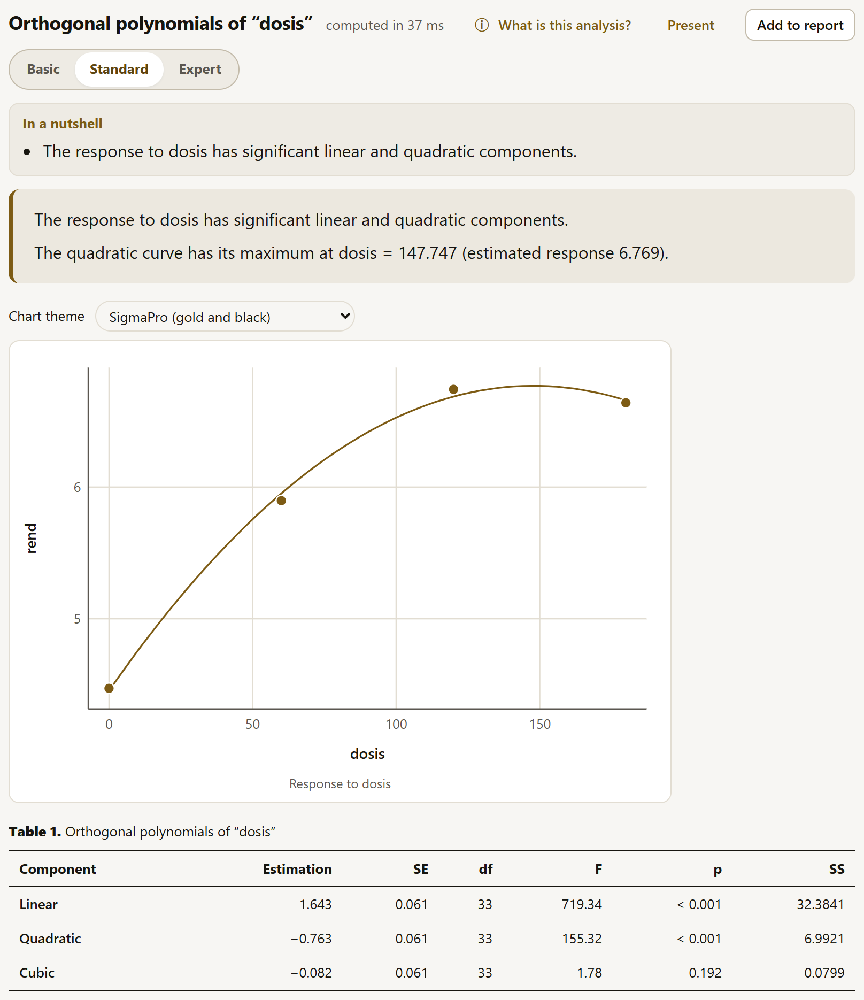

4.10Experimental designs
The analysis of variance of an experimental design splits the variation in the response into the part due to the treatments, the part due to the way the trial was laid out (blocks, rows, columns, main plots) and the part left unexplained (the error). Each design has its own model and, in some, more than one error. SigmaPro includes the eight designs most used in agricultural research and, for whatever does not fit them, the general linear model.
| Design | Model | When |
|---|---|---|
| Completely randomized | y ~ A * B * C | Homogeneous units (pots in a growth chamber, germination boxes); up to three crossed factors. |
| Randomized complete blocks | y ~ bloque + A * B * C | The most common in the field: each block contains all the treatments and groups similar plots. |
| Latin square | y ~ fila + columna + A * B | Variation in two directions (slope and fertility); each treatment once in each row and in each column. |
| Split plots | Error(bloque/A) | One factor that can only be applied to large plots (irrigation, tillage, sowing date) and another within them. |
| Split-split plots | Error(bloque/A/B) | Three factors, each one on plots smaller than the previous one. |
| Strip plots | Error(bloque/(A + B)) | Two factors applied in strips that cross each other (tillage in one direction, irrigation in the other). |
| Balanced incomplete blocks | y ~ bloque + trat | More treatments than plots per block, with each pair of treatments together the same number of times. |
| Lattice and alpha-lattice | y ~ rep + rep:bloque + trat | Many genotypes (plant breeding): incomplete blocks within complete replicates. |
| General linear model | The formula you write | Whatever does not fit the designs above: nested factors, covariates with interactions, extra factors. |
The form
They all ask for the Response variable and the roles of the design. Each field is named as on screen:
| Design | Roles |
|---|---|
| Completely randomized, blocks | Treatment factors (up to 3, crossed); in blocks, also Blocks. |
| Latin square | Treatment factors (up to 2), Rows and Columns. |
| Split plots | Main plots are arranged in (randomized complete blocks, a completely randomized design or a Latin square), Main-plot factor, Subplot factor and, depending on how the main plots are arranged, Blocks, the Main-plot replicate (the number of each main plot within its treatment) or Rows and Columns. |
| Split-split plots | Main-plot factor, Subplot factor, Sub-subplot factor and Blocks. |
| Strip plots | Horizontal strip factor, Vertical strip factor and Blocks. |
| Balanced incomplete blocks | Treatments (one factor) and Blocks. |
| Lattice and alpha-lattice | Treatments (one factor), Replicates and Incomplete blocks (within each replicate). |
A numeric column with few values (a rate) appears marked “(numeric)” and is used as a factor. The completely randomized, block and Latin square designs also offer the Sums of squares (Type III (marginal means), Type II (marginality) or Type I (sequential)); incomplete blocks always use the sequential ones (see below), and all of them ask for the Significance level. When a column identifies the plots, the assistant (section 4.2) recognizes split plots, split-split plots and strip plots in the data and proposes them.
With balanced data (the same number of observations in each combination), the three types give the same result, and the table note says so. With unbalanced data (missing plots, treatments with different numbers of replicates), each type tests a different hypothesis:
- Type I (sequential): each term adjusted for those that come before it; the order matters.
- Type II (marginality): each term adjusted for the other terms that do not contain it; it is the most powerful if there is no interaction.
- Type III (marginal means, the default option): each term adjusted for all the others, with sum-to-zero contrasts; it tests the marginal means with equal weights, which is almost always what you want in an experiment.
What the result includes
- The conclusion for each effect (“hibrido: there are differences (F = 60.635, p < 0.001)”) and the trial indicators: grand mean, coefficient of variation (one per error in designs with strata: CV(a), CV(b)…) and, with a single error, R².
- The chart: with one factor, boxes with the points of each treatment and its mean; with two or more, the interaction plot of the first two, one line per level of the second (figure 4.7). Above it is the Chart theme selector (section 4.5).
- The Compare the means of this design button, which opens the mean comparison (section 4.11) with the same design and the same variables.
- The tables: the analysis of variance; the trial summary (grand mean, observations, CV, R² and the relative efficiency, where it applies); the means of each factor and of the combinations of the first two; and, with two or more factors in a single-error design, the simple effects: the F test of each factor within each level of the other. With a single error the means are the estimated marginal means, with their standard error (a mean that cannot be estimated appears as “—”); in designs with strata they are the averages of each level, with their number of values.
- At the bottom of the eight designs (not of the general linear model), the Continue in the LABG suite band suggests AgriDesign, which generates the randomization, the field layout and the field sheet of the design before sowing; with data loaded, its Send data to AgriDesign button downloads the table and opens the app (chapter 10).
With two or more factors, if the interaction is significant the conclusion warns about it. In single-error designs it refers you to the simple effects and to the means of the combinations; in designs with strata, which do not have the simple-effects table, it says to compare one factor within each level of the other in Mean comparisons, with Within each level of (section 4.11).
Relative efficiency
The trial summary says how much the trial gained by blocking (Gomez and Gomez, 1984), as a percentage and with the degrees-of-freedom adjustment factor when the error has fewer than 20:
- In randomized complete blocks, relative to completely randomized. In the maize it is 160%: a completely randomized design would have needed 60% more replicates for the same precision. It is not computed with missing plots or with generalized blocks.
- In the Latin square, three: relative to completely randomized, relative to blocks with the rows as blocks and relative to blocks with the columns as blocks. With the rows as blocks, the variation among columns would go into the error: that is why that efficiency depends on the mean square of the columns (and the other one, on that of the rows). In the wheat, with “hilera” (the planting rows) as the rows: 128.4% relative to completely randomized, 111.1% with the rows as blocks and 123.7% with the columns as blocks; blocking by columns alone would have lost more. It is computed with the complete square (t² plots).
Some situations are recognized automatically and explained in a notice: more than one plot per treatment in each block (generalized blocks: the block × treatment interaction is estimated), missing block and treatment combinations (the means are adjusted), empty cells (the type III sum of squares does not exist and type II is used) or a term confounded with another.
Split plots, split-split plots and strip plots
In these designs each factor was applied to units of different sizes, so each one has its own error: the main-plot factor is tested against error a, and the subplot factor and the interaction against error b (the variation within main plots). Error a is block × main plot when the main plots are in blocks, main plot × replicate if they are completely randomized, and row × column if they are in a Latin square. The table note says which error each term is tested against, and the blocks are not tested because their stratum has no error of its own. Analyzing these trials as an ordinary factorial would use a single error and give false F tests, almost always in favor of the main-plot factor.

Split-split plots add a third stratum (Error(bloque/A/B), with errors a, b and c), and strip plots have three errors: a for the horizontal strip factor (block × A), b for the vertical one (block × B) and c for their interaction. With the maize laid out in strips, for example, errors a, b and c have 6, 9 and 18 degrees of freedom. In split-split plots, the table of means of the combinations and the interaction plot show only the first two factors (A × B); the other interactions are studied in Mean comparisons.
The example Rice: irrigation × variety × nitrogen (split-split plot), fictitious and for practice, shows this (figure below): irrigation, in the main plots, is tested with only 2 degrees of freedom of error a (F = 95.839, p = 0.010); the irrigation × nitrogen interaction is significant (F = 23.273, p < 0.001), and the conclusion asks you to compare one factor within each level of the other; the chart and the table of combinations, on the other hand, show irrigation × variety. The coefficients of variation decrease from error a to error c: 8.5, 3.1 and 2.2%. For split plots there is another practice example, Wheat: irrigation × variety (split plot).
![The split-split plots of the rice: the conclusion with riego (F = 95.839, p = 0.010), variedad (F = 36.254, p less than 0.001), riego × variedad with no evidence (p = 0.060), nitrogeno (F = 459.841), riego × nitrogeno with differences (F = 23.273, p less than 0.001) and the other two interactions with no evidence; the warning that the riego × nitrogeno interaction is significant and that one factor should be compared within each level of the other with Within each level of; overall mean 5.938 and CV(a) 8.5%, CV(b) 3.1%, CV(c) 2.2%; the button to compare the means (the riego × variedad interaction plot, which goes between the conclusion and the table, is not shown); and the analysis of variance with bloque, riego, error a (2 df), variedad, riego × variedad, error b (8 df), nitrogeno, its interactions, error c (12 df) and total](../img/en/b4-subdivididas.png)
With unbalanced data (missing or extra plots), the F tests of the strata are no longer exact and the app warns about it; in that case the mixed model of section 4.15, which handles the imbalance, is the better choice. If an error term is confounded with another, a notice says that the error model is singular.
Incomplete blocks: BIB, lattice and alpha-lattice
When there are more treatments than plots fit in a homogeneous block, each block receives only some of them. The intra-block analysis compares the treatments within the blocks: their sum of squares is sequential (type I), with the treatments last, adjusted for the blocks, and their means are adjusted means. The table note recalls this. The F of the blocks, on the other hand, is not adjusted for the treatments and is only an indication.
In balanced incomplete blocks, the trial summary also includes the efficiency factor E = λt/(rk) and λ, the number of times each pair of treatments occurs together in a block. With the example Sorghum: seven lines in incomplete blocks (BIB), fictitious and for practice (7 lines in 7 blocks of 3), the lines differ (F = 8.604, p = 0.004), with E = 0.778 and λ = 1. If the design is not an exact BIB (blocks of different sizes or pairs that do not occur together the same number of times), the app says so and does not compute the efficiency; the intra-block analysis remains valid.

In these two designs, the box plot shows the raw data of each treatment, not adjusted for the blocks; the means you should publish are the adjusted ones in the table, with their standard error. The intra-block analysis wastes the information there is between blocks. To recover it, with blocks as a random effect, there is Lattice and alpha-lattice (inter-block recovery), among the mixed models (section 4.15); for the heritability of the genotypes, see section 4.16.
The general linear model
For models that are not a design in the catalog, General linear model (formula) asks for the Response variable and the Model terms (what goes after “~”), with the notation of section 4.4; below, the app explains how it read each term. It also asks for the Numeric columns that are treatments (factor), the Sums of squares, the Confidence level and the Significance level. It does not accept error strata (Error(…): that is what the split-plot designs are for) or functions inside the formula (the transformation is done in the Data block); without an intercept, it uses type I sums of squares.
It delivers the analysis of variance, the coefficients (with treatment contrasts: each level compared with the first), a chart of the marginal means (of the first interaction between two factors or, if there is none, of the factor with the largest F; with no factors, observed vs. fitted values) and the means of each factor with their confidence interval. It does not include the trial summary, the efficiency or the suite band. It is also what the model builder uses when the formula is written by hand.
4.11Mean comparisons and contrasts
An analysis of variance tells you whether the treatments differ, not which ones. That is what the four methods of this family are for; they work on the model of any of the eight designs in the previous section: the form starts with the Experimental design and its roles, and then asks what to compare.
| Method | What for |
|---|---|
| Mean comparisons | All the treatments with one another (or against a control), with the group letters. |
| Contrasts | Comparisons planned in advance (the control against the rest, one group against another). |
| Orthogonal polynomials | The shape of the response to a quantitative factor (a rate): linear, quadratic, cubic, and the optimum rate. |
| Adjusted means | The estimated marginal means with their confidence interval, without comparing them. |
Two fields are common to all of them. The first is what is compared: in mean comparisons and adjusted means, Means of, with one checkbox per factor (one or two at a time; with two, their combinations are compared, such as “H-66 : 180”); in contrasts, Factor, and in polynomials, Quantitative factor (rate). The second is Within each level of, which by default says — all together — and accepts a single factor. If the interaction is significant, comparing the means of one factor averaged over the other can be misleading; you then compare one factor within each level of the other (the rates within each hybrid), and the result includes a conclusion, its tables and a chart for each level (up to six charts).

Mean comparisons

The Test chooses how the error of making many comparisons at once is controlled:
| Test | How it works |
|---|---|
| Tukey | All pairs, with the error of the whole family of comparisons controlled (Tukey-Kramer if the number of replicates differs). The default option and the most recommended for comparing everything against everything. |
| Fisher's LSD and Protected LSD | The least significant difference, without adjustment for multiplicity (it finds more differences, including false ones). The protected version only separates means if the F of that term was significant; if not, all the means get the same letter and a note says so. That F comes from the analysis with sequential (type I) sums of squares, which in an unbalanced factorial may not be the type III one shown by the design. |
| Duncan and Student-Newman-Keuls | Stepwise tests, traditional in agronomy; they control the error less well than Tukey. They use a common standard error (with the harmonic mean of the replicates) and the q statistic. |
| Scheffé | Tests the pairs with Scheffé’s criterion (F with k − 1 df), which protects any contrast; that is why it is very conservative. |
| Bonferroni, Šidák and Holm | General adjustments of the LSD p-value; Holm is the most powerful of the three. |
| Dunnett (vs. a control) | Each treatment against a control, chosen in Control; the Hypothesis can be Different from control, Greater than control or Less than control. More powerful than Tukey for that question. |
| Games-Howell (unequal variances) | All pairs without assuming equal variances: each pair with its own error and its own degrees of freedom. Only with one factor in a completely randomized design. |
The result includes the conclusion with the groups (“a: H-66; b: H-52; c: H-40”), the chart of the means with their standard error and their letters, the table of means sorted from largest to smallest with their group, and the table of pairwise comparisons (difference, SE, df, the t statistic —or q in Duncan, SNK and Games-Howell—, adjusted p and whether they differ). The means are the estimated marginal means of the design’s model and the error is that of the design: in a split plot, each comparison uses the error that corresponds to it and Satterthwaite degrees of freedom, and the table note says so. In designs with strata, the table of means does not include their standard error and the chart has no bars.
With the rice of the previous section, for example, Means of nitrogen (“nitrogeno”) Within each level of irrigation (“riego”) shows the interaction: the N80 rate outperforms N0 by 0.731 under “Temporal” (rainfed) and by 1.156 under “Riego” (irrigated) (both with p < 0.001, with the 12 df of error c).
Dunnett
Dunnett’s p-values are exact and single-step: they come from the multivariate t distribution of the comparisons against the control and are computed in a few seconds, also in balanced incomplete blocks. With the avocado thrips (complete blocks with two missing plots), the hypothesis Less than control finds that only Spinosad reduces thrips relative to the control, “Testigo” (−6.333 thrips per shoot, p = 0.016).
- Dunnett needs a single error. In split plots, split-split plots or strip plots, the app stops and explains that Bonferroni and Holm, which adjust all pairs, can be used instead, although against the control they are conservative. It also stops when the comparisons against the control do not have the correlation structure that the exact calculation requires, as in the alpha-lattice of 24 genotypes or with certain missing plots: the message proposes the same.
- Duncan and Student-Newman-Keuls also need a single error; in split plots, the app proposes Tukey, LSD or Bonferroni.
- Games-Howell is only for one factor in a completely randomized design, without Within each level of; in other designs, the app proposes Tukey or Bonferroni.
- Adjusted means needs a single error; in split plots, split-split plots or strip plots, the means are compared with Mean comparisons.
Contrasts
A contrast compares groups of treatments with coefficients that add up to zero. They are written in the Contrasts (one per line) field, in the form nombre: coeficientes (name: coefficients), in the order of the levels that the help shows below it (the coefficients are separated by spaces, commas or semicolons; a line without a name is called “Contrast 1”, “Contrast 2”…). With the field empty, the app shows the first level against the rest as an example:
I y II vs III: 1 1 -2 I vs II: 1 -1 0

Each contrast includes its estimate, SE, df, t, p and, in single-error designs, its sum of squares. If the contrasts are orthogonal to each other (with the same number of replicates per level, their coefficients multiplied term by term add up to zero; the app checks this with the actual replicates of each level), their sums of squares partition that of the treatments without overlapping, and the note says so; if not, it warns that they overlap. A line that does not add up to zero is also computed, with the note that it is a linear combination and not a contrast. Contrasts are planned before looking at the data; chosen afterwards, they have the problem of multiple comparisons.
Orthogonal polynomials
With a quantitative factor (nitrogen rates, plant densities, temperatures), what matters is not the differences between rates but the shape of the response. Orthogonal polynomials split the variation among rates into a linear component, a quadratic one, a cubic one… (as many as the number of rates minus one), each with its own test. You choose the Quantitative factor (rate), whose levels must be numbers (at least three), and the Curve degree (Straight line, Quadratic (with the optimum rate) or Cubic), which decides the fitted curve; the table always includes all the components.

The orthogonal coefficients are computed on the actual levels of the rate, even if they are not equally spaced. With the quadratic curve, the app fits the equation to the means (y = 4.454 + 0.03133·x − 1.060·10−4·x² in the maize, with R² = 0.998) and gives the rate at the maximum or minimum; if it falls outside the rates tested, it warns about it, because extrapolating is not advisable. With Within each level of there is one curve per level: in the maize, the maximum of each hybrid is at 147.5 (H-40), 139.5 (H-52) and 157.7 kg/ha (H-66). For a response that levels off at a plateau, the linear-plateau model (section 4.18) is the better choice.
Adjusted means
The estimated marginal means are the averages that the model predicts for each level, with equal weights over the other factors. With balanced data they are the usual means; with missing plots, incomplete blocks or covariates, they are the ones you should publish. For the chosen factor (and within each level of another, if requested), the method gives the mean, its SE, the degrees of freedom and its confidence interval at the chosen Confidence level, with a chart of the means and their intervals. In the alpha-lattice, for example, the 24 adjusted means have standard errors from 0.194 to 0.195, with 31 df.